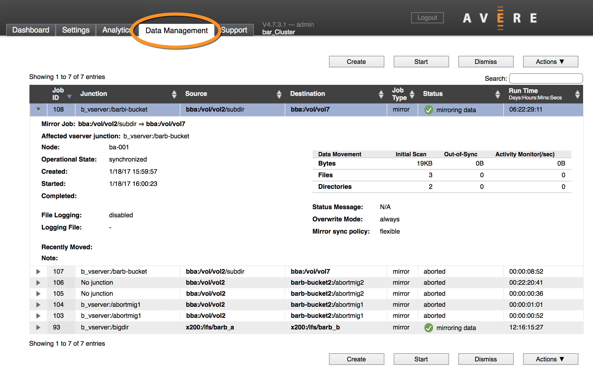

Data Management Guide - Avere OS version 4.7¶
Avere OS’s FlashMove® and FlashMirror® features help you move and copy data between two filesystems - for example, from one core filer to another, between NAS and cloud storage, or from one directory to another on the same system.
- FlashMove lets you migrate data from one storage system to another without interrupting client access or having to change any client settings.
- FlashMirror provides ongoing data replication between two storage systems for data protection.
Note
Additional licenses are required to enable the FlashMove and FlashMirror features. Read Appendix A: Adding or Removing Feature Licenses to learn how to purchase and install the licenses.
Create and monitor data migration jobs from the Data Management tab in the Avere Control Panel.
{kind=link}
The documents in this section explain the FlashMove and FlashMirror features in depth. They give step-by-step instructions for creating and monitoring Data Management jobs, and also include information about troubleshooting or debugging jobs.
Table of Contents¶
- Using the Avere Cluster To Move or Mirror Data
- Understanding FlashMove and FlashMirror
- Prerequisites for using FlashMove or FlashMirror
- Creating a New FlashMove or FlashMirror Job
- Monitoring Data Management Jobs
- Data Management Actions
- Tips and Troubleshooting Information for Data Management Jobs
- Appendix A: Adding or Removing Feature Licenses
- Copyright Information
- Trademark Information
- Revision History